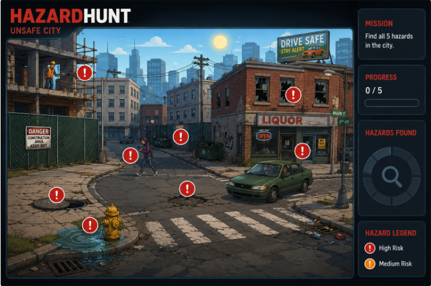

Can you spot what others miss?
Explore the city scene, identify hidden safety hazards, and learn why each one matters. You have three minutes — trust your eyes.
Look carefully through the illustrated environment.
Click something that appears unsafe.
Read the safety explanation for each find.
Discover every hazard before time runs out.

Every hazard identified — the city is safer with you on watch.
Every verified-looking report builds your local streak.
Click the map to choose a location.
No location selected